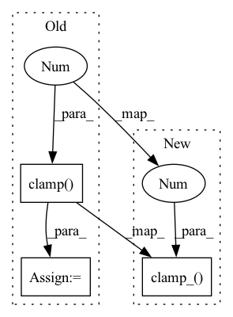

Pattern ID :14487

Before Change
def forward(self, text_tokens: LongTensor) -> FloatTensor:
attention_mask = text_tokens.not_equal(1)
pose_tokens = self.token_indices[None][[0] * text_tokens.shape[0]]
text_tokens = text_tokens.clamp(0, self.text_vocab_count - 1)
encoder_state = (
self.embed_tokens.forward(text_tokens) +
self.embed_positions.forward(pose_tokens)
)
After Change
def forward(self, text_tokens: LongTensor) -> FloatTensor:
attention_mask = text_tokens.not_equal(1)
pose_tokens = self.token_indices[None][[0] * text_tokens.shape[0]]
text_tokens.clamp_(0, self.text_vocab_count - 1)
encoder_state = (
self.embed_tokens.forward(text_tokens) +
self.embed_positions.forward(pose_tokens)
)
In pattern: SUPERPATTERN
Frequency: 3
Non-data size: 3
Instances
Fragment ID: 47537156
Project Name: kuprel/min-dalle
Commit Name: 1ffdef9a565cf5198a00f648edb5aa12564f182b
Time: 2022-07-10
Author: brkuprel@gmail.com
File Name: min_dalle/models/dalle_bart_encoder.py
M Class Name: DalleBartEncoder
N Class Name: DalleBartEncoder
M Method Name: forward(2)
N Method Name: forward(2)
M Parent Class: nn.Module
N Parent Class: nn.Module
M File Name: min_dalle/models/dalle_bart_encoder.py
N File Name: min_dalle/models/dalle_bart_encoder.py
M Start Line: 141
M End Line: 141
N Start Line: 141
N End Line: 141
'>
Before Change
self.decoder = Decoder()
def forward(self, z: LongTensor) -> FloatTensor:
z = z.clamp(0, self.vocab_count - 1)
z = self.embedding.forward(z)
z = z.view((z.shape[0], 2 ** 4, 2 ** 4, 2 ** 8))
z = z.permute(0, 3, 1, 2).contiguous()
z = self.post_quant_conv.forward(z)
After Change
self.decoder = Decoder()
def forward(self, z: LongTensor) -> FloatTensor:
z.clamp_(0, self.vocab_count - 1)
z = self.embedding.forward(z)
z = z.view((z.shape[0], 2 ** 4, 2 ** 4, 2 ** 8))
z = z.permute(0, 3, 1, 2).contiguous()
z = self.post_quant_conv.forward(z)
'>
Fragment ID: 47537159
Project Name: kuprel/min-dalle
Commit Name: 1ffdef9a565cf5198a00f648edb5aa12564f182b
Time: 2022-07-10
Author: brkuprel@gmail.com
File Name: min_dalle/models/vqgan_detokenizer.py
M Class Name: VQGanDetokenizer
N Class Name: VQGanDetokenizer
M Method Name: forward(2)
N Method Name: forward(2)
M Parent Class: Module
N Parent Class: Module
M File Name: min_dalle/models/vqgan_detokenizer.py
N File Name: min_dalle/models/vqgan_detokenizer.py
M Start Line: 169
M End Line: 169
N Start Line: 169
N End Line: 169
'>
Before Change
image_count = encoder_state.shape[0] // 2
token_index_batched = token_index[[0] * image_count * 2]
prev_tokens = prev_tokens[list(range(image_count)) * 2]
prev_tokens = prev_tokens.clamp(0, self.image_vocab_count)
decoder_state = self.embed_tokens.forward(prev_tokens)
decoder_state += self.embed_positions.forward(token_index_batched)
decoder_state = self.layernorm_embedding.forward(decoder_state)
decoder_state = decoder_state[:, None]
After Change
image_count = encoder_state.shape[0] // 2
token_index_batched = token_index[[0] * image_count * 2]
prev_tokens = prev_tokens[list(range(image_count)) * 2]
prev_tokens.clamp_(0, self.image_vocab_count)
decoder_state = self.embed_tokens.forward(prev_tokens)
decoder_state += self.embed_positions.forward(token_index_batched)
decoder_state = self.layernorm_embedding.forward(decoder_state)
decoder_state = decoder_state[:, None]
'>
Fragment ID: 47537154
Project Name: kuprel/min-dalle
Commit Name: 1ffdef9a565cf5198a00f648edb5aa12564f182b
Time: 2022-07-10
Author: brkuprel@gmail.com
File Name: min_dalle/models/dalle_bart_decoder.py
M Class Name: DalleBartDecoder
N Class Name: DalleBartDecoder
M Method Name: decode_step(8)
N Method Name: decode_step(8)
M Parent Class: nn.Module
N Parent Class: nn.Module
M File Name: min_dalle/models/dalle_bart_decoder.py
N File Name: min_dalle/models/dalle_bart_decoder.py
M Start Line: 154
M End Line: 154
N Start Line: 154
N End Line: 154